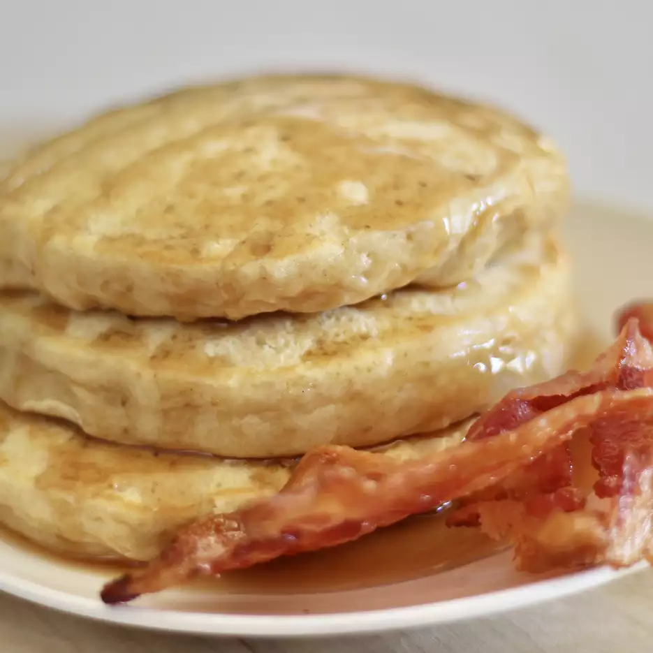

Japanese-Style Fluffy Pancakes

Description
The Japanese have perfected this simple, yet exciting fluffy pancake recipe that anyone can make. So delicious, you might eat it without butter or syrup. Enjoy! Serve this right from the griddle or pan.
Ingredients
- 2 Eggs
- 1/4 cup Brown Sugar
- 1 1/2 cups All-Purpose Flour
- 2 teaspoons Baking Powder
- 2/3 cup Milk
- 1/2 teaspoon Vanilla Extract
Steps
- Beat eggs and sugar together in a bowl using an electric mixer on medium speed until well blended.
- Mix flour and baking powder together in a separate bowl. Slowly mix into the sugar-egg mixture; batter will thicken rather quickly. Slowly add milk. Stir in vanilla extract.
- Heat a lightly oiled griddle over medium-high heat. Drop batter by large spoonfuls onto the griddle and cook until bubbles form and the edges are dry, 3 to 4 minutes. Flip and cook until browned on the other side, 2 to 3 minutes. Repeat with remaining batter.